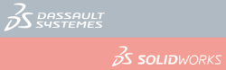
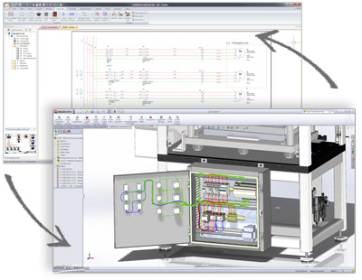
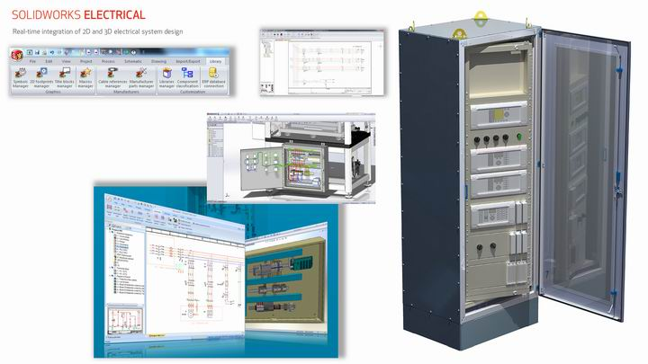
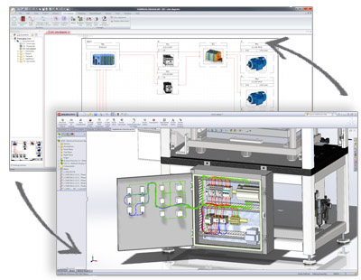
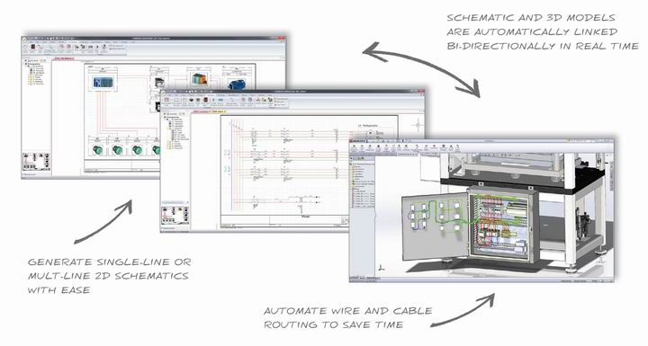

2B þemalarýn ve 3B modellerin gerçek zamanlý entegrasyonu makine ve elektrik mühendisliði ekiplerinin daha iyi iþbirliði yapmasýna ve daha doðru tasarýmlar üretmesine olanak saðlýyor...
3B tasarým yazýlýmlarýnýn ve 3B Dijital Modelleme ve Ürün Yaþam Döngüsü Yönetimi (PLM) çözümlerinin lideri 3D Experience Company Dassault Systèmes (Euronext Paris: #13065, DSY.PA), bugün yeni SolidWorks Electrical uygulamalarýný tanýttý. Bu yeni ürünler arasýnda SolidWorks tasarým uygulamasýna yönelik birbiriyle gerçek zaman baðlantýlý, yenilikçi, sistem seviyesinde 2B þema tasarým aracý ile güçlü bir 3B elektrik modelleme eklentisi yer almaktadýr.
“Günümüzde endüstriyel ekipman, mühendislik hizmetleri, yüksek teknoloji, týbbi cihaz ve tüketici mallarý alanýnda faaliyet gösteren þirketler gün geçtikçe daha fazla elektrikli parça içeren ürünler geliþtirmektedir. SolidWorks müþterilerimizin yarýsýndan fazlasý makine ve elektrik sistem mühendisleri arasýndaki iþbirliðini güçlendiren bir çözüm aramaktadýr.” diyen SolidWorks, Dassault Systèmes CEO'su Bertrand Sicot sözlerine þöyle devam ediyor: “SolidWorks Electrical'ýn ürün portföyümüze eklenmesiyle birlikte, yeterince hizmet sunulmayan bu pazara SolidWorks'ün kullaným kolaylýðý ilkesini yansýtan ve makine ve elektrik tasarým gruplarý arasýnda yakýn iþbirliði kavramýný gerçeðe dönüþtüren güçlü bir çözümle adým atacaðýz.”

Elektriksel sistem tasarýmý söz konusu olduðunda, þirketler genellikle departmanlarýnýn toplam uygulama performansýný arttýrmanýn yollarýný ararlar. SolidWorks Electrical uygulamalarý, mühendislerin ve tasarýmcýlarýn elektrikli sistem planlamasýný ve bu elektriksel özellikleri genel 3B mekanik modellere entegre etmesini kolaylaþtýrmaktadýr. Bu yeni uygulamalar, makine ve elektrik mühendisliði ekiplerinin ürün geliþtirme sürecinde iþbirliði yapmasýna, tasarým evresini hýzlandýrmasýna ve ürün gecikmelerini azaltmasýna olanak tanýyarak daha tutarlý ve standart hale getirilmiþ tasarýmlar ortaya çýkarýlmasýný, maliyetlerin düþürülmesini ve pazara sunma süresinin kýsaltýlmasýný saðlar.
“SolidWorks ile tam entegrasyon özelliði, SolidWorks Electrical uygulamasýnýn öðrenilmesini kolaylaþtýracak ve makine ve elektrik departmanlarýmýzýn elektrik sistemi ve kablo tesisatý tasarýmý konusunda iþbirliði yapmasýný mümkün kýlacaktýr.” diyen Getman Corporation Proje Yöneticisi Kyle Strong þunlarý ifade ediyor: “Maden araçlarýmýz çok karmaþýk elektrik kablo tesisatlarý içeriyor ve tutarlý bir tasarýma sahip olmalarý gerekiyor. Bu yüzden SolidWorks Electrical'ý seçmemiz hiç de zor olmadý. Elektrik ve makine tasarým süreçlerimizi birbiriyle entegre hale getirerek elektriksel gereklilikleri ve kablo/tesisat yollarýný daha iyi belgelendirebiliyor ve dolayýsýyla, yeniden çalýþma ihtiyacýný azaltýp daha kaliteli ürünler elde edebiliyor ve pazara sunma süresini kýsaltabiliyoruz.”
SolidWorks Electrical, aþaðýdaki üç uygulama ile yeni özellikler sunmaktadýr:
- SolidWorks Electrical – elektrikli sistem mimarisi ve planlamasýna yönelik bir2Bþematik tasarým aracý:
- Elektriksel tasarýmý dinamik ve baðlantýya duyarlý bir kullanýcý arayüzü ile basitleþtirir, konseptleri hýzla ayrýntýlý tasarýmlara dönüþtürme yeteneðini kazandýrýr
- Gerçek zamanlý hata algýlama özelliði sayesinde sorunlarý derhal tanýmlayarak hurda ve tekrar çalýþma maliyetlerini ortadan kaldýrýr
- 500.000'den fazla standart elektrikli parça içeren kitaplýk sayesinde daha kolay ve hýzlý þemalar oluþturulmasýna imkan tanýr
- Birden çok kiþinin ayný anda ayný proje üzerinde çalýþabilmesini saðlar
- SolidWorks Electrical 3D -- SolidWorks Electrical 2B sistem düzeyindeki þemalarýn SolidWorks ile tasarlanmýþ 3B modellere baðlanmasýný saðlayan bir SolidWorks CAD uygulamasý eklentisi. Aþaðýdakileri içerir:
- Elektro-mekanik tasarýmlarýn senkronize edilmesi suretiyle geliþtirme süreci boyunca tutarlýlýðýn korunmasýný saðlayan 2B ve 3B arasýnda gerçek zamanlý, iki yönlü güncellemeler
- Tasarýmlarýn standart hale getirilmesine ve hata ve gecikmeleri azaltmak için malzeme listelerinin birleþtirilmesine yardýmcý olmak üzere 2B þemalarýn 3B modellerle entegrasyonu
- Tutarlý ürün imalatý için özel konumlarýn ve yollarýn belirlenmesini saðlamak amacýyla 3B modele elektrik sisteminin ve kablo/tesisatýn yerleþtirilmesi
- SolidWorks Electrical Professional – Elektrikli ürün geliþtirme sürecinin 2B ve 3B alanlarýnda çalýþan kullanýcýlar için hemSolidWorks Electrical hem de SolidWorks Electrical 3B iþlevlerini tek bir uygulamada bir araya getirir.

SolidWorks Electrical uygulamalarý, elektriksel tasarým pazarýnda 20 yýlý aþan deneyime sahip Trace Software þirketinden alýnan teknolojiye dayanmaktadýr. Halihazýrda SolidWorks Gold Çözüm Ortaðý olan Trace’in elecworks™ ürünleri SolidWorks ile entegredir ve mühendislerin aþina olduklarý SolidWorks ortamýnda kalarak elektromekanik tasarýmlarý optimize etmelerini saðlar.
SolidWorks Electrical yazýlýmýnýn ilk sürümü, Aðustos 2012'de Kuzey Amerika, Avrupa ve Orta Doðu'da kullanýcýlarla buluþacak ve bunu yýlýn ilerleyen aylarýnda diðer bölgeler ve ülkeler izleyecek. SolidWorks Electrical hakkýnda daha fazla bilgi için lütfen þu adresi ziyaret edin: http://www.solidworks.com/electrical/
***
Dassault Systèmes Hakkýnda
3D Experience Company, Dassault Systèmes kuruluþlara ve kiþilere sürdürülebilir yenilikler yapabilmeyi saðlayan sanal evrenler sunar. Þirketin dünya çapýnda lider olan çözümleri, ürünlerin tasarlanma, üretilme ve desteklenme biçimini deðiþtirmektedir. Dassault Systèmes’in iþbirliðine yönelik çözümleri, sosyal yeniliklere zemin hazýrlayarak sanal dünyanýn gerçek dünyayý geliþtirme olanaklarýný artýrmaktadýr. Grup, 80'den fazla ülkede tüm sektörlerden ve her büyüklükten 150.000'i aþkýn müþteriye deðer saðlamaktadýr. Daha fazla bilgi için www.3ds.com adresini ziyaret ediniz.
CATIA, SOLIDWORKS, SIMULIA, DELMIA, ENOVIA, GEOVIA, EXALEAD, NETVIBES, 3DSWYM ve 3DVIA Dassault Systèmes veya baðlý kuruluþlarýnýn ABD ve diðer ülkelerdeki tescilli ticari markalarýdýr.
Bilgi Ýçin:
Simge Akarsu
Simge.Akarsu@3ds.com
Dassault Systèmes SolidWorks Istanbul
Astoria Kulesi A Blok Kat 10 Büyükdere Cad. No:127
34394 Esentepe Ýstanbul
Tel.: (212) 340 46 33
|